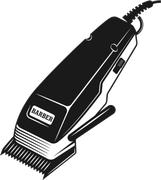
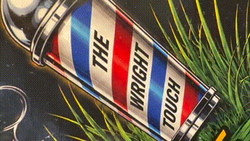
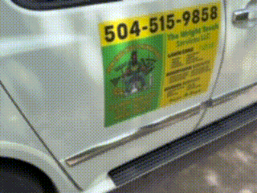
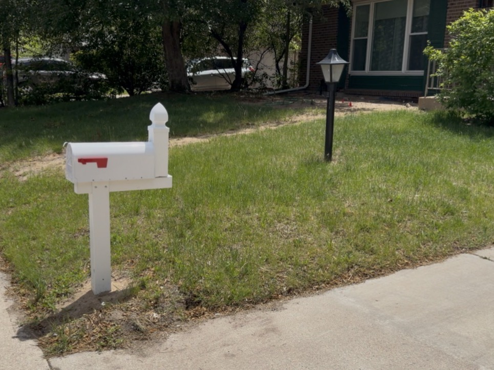
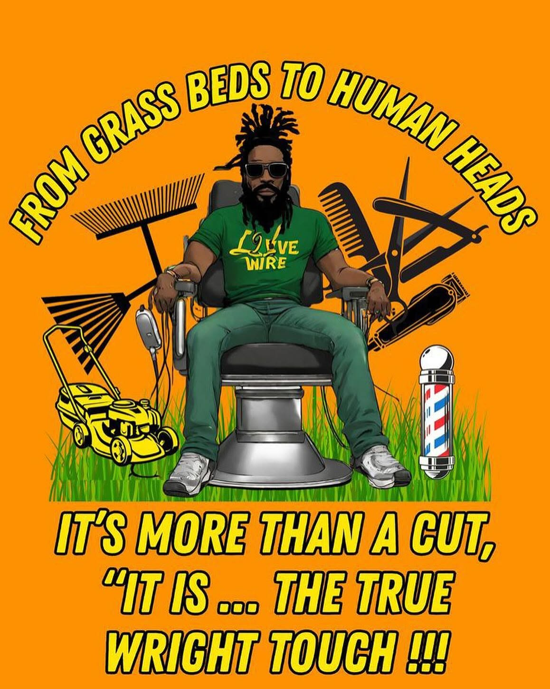

Fades & Tapers
Clean blends from skin to length, with lineups that hold up all week.
Carnell Wright · New Orleans · Houston · Orlando · Atlanta · Denver
Sharp fades and locs work in the chair. Clean, consistent yards on the mower. Same owner, same care on both.
From Grass Beds to Human Heads

Fades, lineups, locs, color and beard work.
See the chair → The YardMowing, edging, cleanup and weeding that keeps the place looking right.
See the yard → The HandymanMinor repairs, assembly, installs, painting touch-ups, gutters and pressure washing.
See the fixes →See it in motion


01 · The Barber
Mobile service. We come to you.
Clean blends from skin to length, with lineups that hold up all week.
Trims, shaping and fades around locs, so the cut stays sharp and the locs stay healthy.
Highlights, tones and custom line work when you want something that stands out.
Shape, line and sculpt so the beard matches the haircut.
02 · The Yard
Even cuts, clean edges along walks, fences and the house.
Crisp beds and bare-minimum mess, with clippings and debris cleared off.
Stray growth pulled before it takes over the lawn and the beds.
Weekly or bi-weekly visits so you never have to think about the yard.
03 · Handyman
04 · Transformations
Before on the left, after on the right.

 Before
After
Before
After
 Before
After
Before
After



Before After05 · About
Carnell Wright brings the same discipline from the chair to the yard. He started in New Orleans, learned the craft, and built The Wright Touch in Denver with one rule: show up, do it right, and leave it better than you found it.
Whether it's a fresh fade before a big day or a lawn that finally looks the way you want, the work gets the same attention.
— Carnell Wright
It's more than a cut. It's the true Wright Touch.

06 · Book
Text is the fastest way to book. Call if you'd rather talk it through.
Serving Denver, CO and surrounding areas.